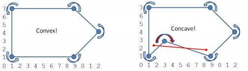
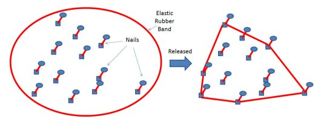
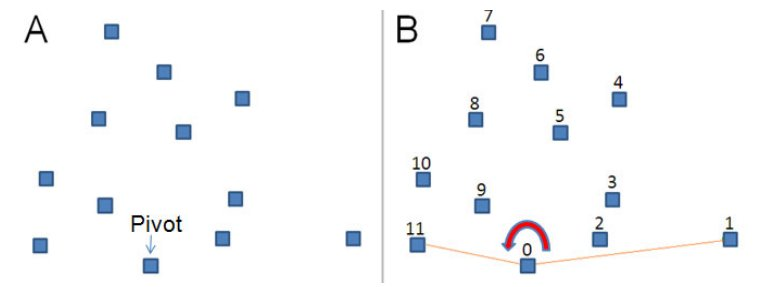
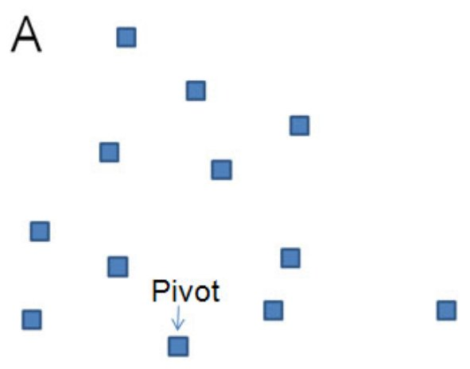

Geometría II
Polígonos convexos y concavos

Saber si un polígono es convexo

boolean isConvex(ArrayList P) {
int sz = (int)P.size();
if (sz <= 3) return false; // un punto/sz=2 o una linea/sz=3 no son convexos
boolean isLeft = ccw(P.get(0), P.get(1), P.get(2));
for (int i = 1; i < sz-1; i++)
if (ccw(P.get(i), P.get(i+1), P.get((i+2) == sz ? 1 : i+2)) != isLeft)
return false;
return true;
}
Envolvente convexa de un set de puntos
Se elige un pivot y los puntos se ordenan por sus angulos con el pivot
Se revisan los angulos punto por punto

List CH(List P) {
int i, j, n = (int)P.size();
if (n <= 3) {
if (P.get(0).compareTo(P.get(n-1)) != 0) P.add(P.get(0));
return P;
}
// Primero se elige el pivot mas abajo a la izquierda
int P0 = 0;
for (i = 1; i < n; i++)
if (P.get(i).y < P.get(P0).y ||
(P.get(i).y == P.get(P0).y && P.get(i).x > P.get(P0).x))
P0 = i;
// swap P[P0] con P[0]
point temp = P.get(0); P.set(0, P.get(P0)); P.set(P0 ,temp);
// Ordenamos los puntos por su angulo con el pivot
pivot = P.get(0);
Collections.sort(P, new Comparator(){
public int compare(point a, point b) {
if (collinear(pivot, a, b))
return dist(pivot, a) < dist(pivot, b) ? -1 : 1;
double d1x = a.x - pivot.x, d1y = a.y - pivot.y;
double d2x = b.x - pivot.x, d2y = b.y - pivot.y;
return (Math.atan2(d1y, d1x) - Math.atan2(d2y, d2x)) < 0 ? -1 : 1;
}
});
// Luego, test con ccw
List S = new ArrayList();
S.add(P.get(n-1)); S.add(P.get(0)); S.add(P.get(1));
i = 2;
while (i < n) {
j = S.size() - 1;
if (ccw(S.get(j-1), S.get(j), P.get(i))) S.add(P.get(i++));
else S.remove(S.size() - 1);
}
return S;
}